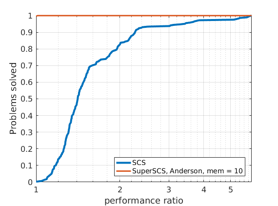

|
SuperSCS
|
|
SuperSCS
|
In order to compare different solvers, we employ the Dolan-Moré performance profile plot.
Let us briefly introduce the Dolan-Moré performance profile plot.
Let \(P\) be a finite set of problems used as benchmarks and \(S\) be a set of solvers we want to compare to one another.
Let \(t_{p,s}\) be the computing cost (e.g., time of flops) to solve a problem \(p\) using a solver \(s\).
We define the ration between \(t_{p,s}\) and the lowest observed cost to solve this problem using some solver \(s\in S\):
\begin{eqnarray*} r_{p,s} = \frac{t_{p,s}}{\min_{s \in S} t_{p,s}}. \end{eqnarray*}
If a solver \(s\) does not solve a problem \(p\), then we assign to \(r_{p,s}\) a very high value \(r_M > r_{p,s}\) for all other \(p,s\).
The cumulative distribution of the performance ratio is the Dolan-Moré performance profile plot.
In particular, define
\begin{eqnarray*} \rho_s(\tau) = \frac{1}{n_p}\#\{p\in P: r_{p,s}\leq \tau\}, \end{eqnarray*}
for \(\tau\geq 1\) and where \(n_p\) is the number of problems.
The Dolan-Moré performance profile is the plot of \(\rho_s\) vs \(\tau\), typically on a logarithmic x-axis.
In all benchmark results presented below we set the tolerance of \(10^{-4}\).

| 
| 
|
288 logistic regression problems

|

|

| 
| 
|

| 
|
We tested SuperSCS on the Maros-Meszaros collection of QP problems.
| Name | SCS | Broyden 50 | Broyden 100 | Anderson 5 | Anderson 10 |
|---|---|---|---|---|---|
| AUG2D | Inf | 6.69 | 27.48 | 3.52 | 4.47 |
| AUG2DC | Inf | 5.70 | 3.91 | 3.23 | 7.56 |
| AUG2DCQP | 0.65 | 0.73 | 0.70 | 0.43 | 0.58 |
| AUG3DCQP | Inf | 0.49 | 1.04 | 0.89 | 1.58 |
| AUG3DQP | Inf | 0.88 | 2.99 | 1.03 | 0.80 |
| CONT-050 | 0.91 | 4.48 | 4.70 | 2.18 | 3.04 |
| CONT-100 | 6.44 | 33.35 | 38.68 | 11.55 | 21.71 |
| HUES-MOD | Inf | 9.88 | 7.57 | 13.00 | 12.55 |
| LASER | Inf | Inf | Inf | 3.15 | 4.07 |
| LISWET1 | 5.39 | 10.92 | 27.71 | 11.21 | 9.29 |
| LISWET10 | 5.43 | 14.94 | 25.97 | 11.62 | 9.06 |
| LISWET11 | 5.42 | 18.85 | 24.74 | 10.68 | 9.66 |
| LISWET12 | 5.63 | 16.30 | 24.14 | 10.11 | 8.28 |
| LISWET2 | 3.97 | 9.65 | 20.21 | 7.85 | 7.07 |
| LISWET3 | 2.90 | 8.90 | 13.11 | 4.89 | 4.85 |
| LISWET4 | 2.60 | 7.77 | 7.02 | 4.03 | 4.22 |
| LISWET5 | Inf | Inf | Inf | 26.11 | 26.25 |
| LISWET6 | 4.81 | 17.48 | 9.36 | 8.55 | 8.37 |
| LISWET7 | 5.27 | 13.64 | 30.48 | 9.74 | 8.78 |
| LISWET8 | 5.04 | 11.85 | 22.02 | 10.25 | 8.78 |
| LISWET9 | 5.40 | 12.17 | Inf | 9.77 | 8.94 |
| MOSARQP1 | 0.72 | 0.59 | 0.77 | 1.05 | 1.32 |
| MOSARQP2 | 0.19 | 0.17 | 0.18 | 0.27 | 0.26 |
| QE226 | 0.79 | Inf | Inf | 0.92 | 0.83 |
| QFFFFF80 | 4.73 | 20.98 | 8.38 | 2.87 | 3.51 |
 1.8.6
1.8.6